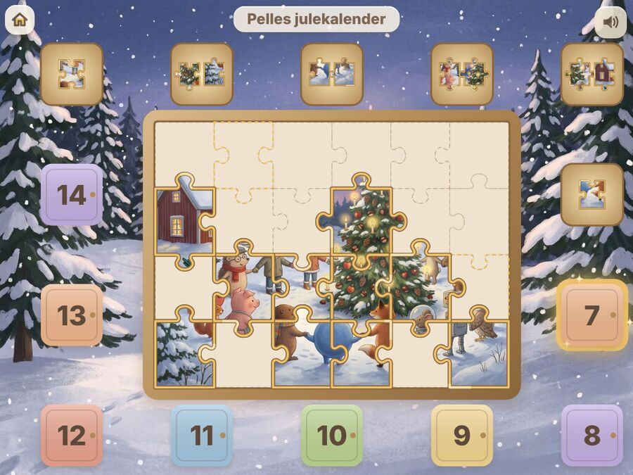
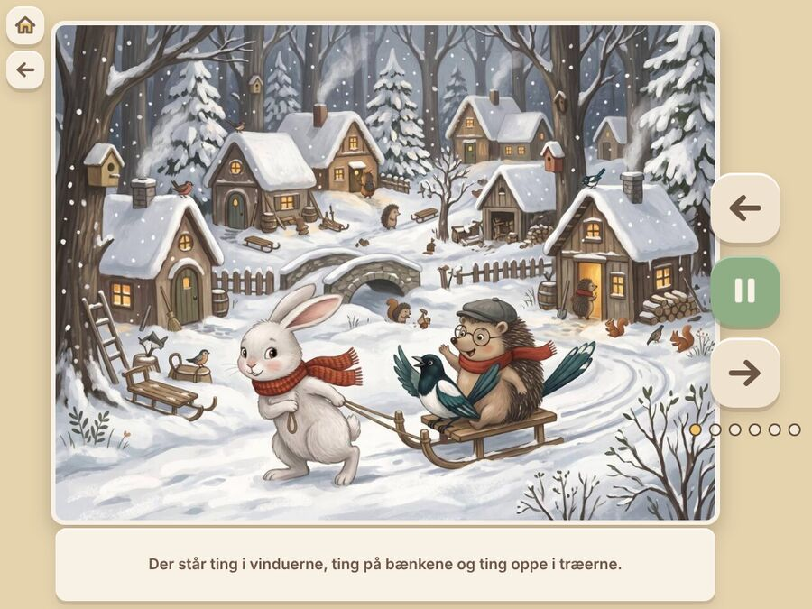
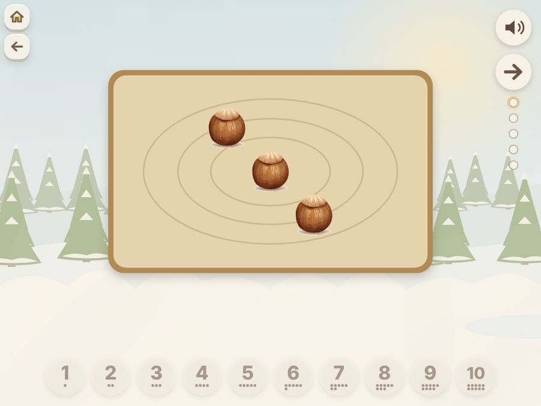

En julekalender i SFO Spil-appen med én låge pr. skoledag fra 1. til 18. december. Hver låge er en lille historie, som appen læser op, og en opgave til børnene bagefter. I hver historie finder Pelle en brik til sit julepuslespil, og den sidste skoledag er puslespillet helt.

Kalenderen ligger i appen, men er låst med en kode til og med 29. november, så børnene ikke åbner den før tid.
Den 30. november forsvinder låsen af sig selv. Så skal I ikke gøre noget, og fra 1. december åbner kalenderen selv dagens låge efter iPad'ens dato.
Kalenderen åbner med lågerne rundt om puslespillet. Dagens låge kan åbnes, de næste ryster bare blidt. Tidligere dages låger står åbne, og deres brikker ligger allerede på plads.
Appen læser historien op over tre billeder. Sætningen står som undertekst nederst, så I kan følge med. Knapperne til højre er tilbage, pause og frem.
Undervejs stiller historien spørgsmål til børnene, fx "Hvor mange brikker har Pelle nu?". Så holder den fem sekunders pause, mens et øre blinker, så børnene kan svare højt. Bagefter siger historien svaret. Et tryk springer pausen over.

I historiens sidste billede glimter en puslespilsbrik. Lad et barn trykke på den, så flyver den ind i puslespillet. Nogle dage har to små historier efter hinanden, og så er der to brikker.
Bagefter kommer en opgave i 4–6 små dele, let først og så sværere. Svarene gives ved at trykke, fx på en talrække til ti. Der er ingen point og ingen tid, og et forkert tryk ryster bare blidt, så man kan prøve igen. Pilen under højttaleren springer en del over.

Til hver låge hører et opgaveark på papir, som følger det samme emne. Arkene og facit kan hentes nederst på siden.
Tælle, se små mængder hurtigt, hvor er der flest, og små regnehistorier. Alt holder sig til tallene 1–10.
Skrive dagens bogstav med fingeren, finde ting, der starter med lyden, og hvilket bogstav et ord starter med.
Hvad rimer, hvad rimer ikke, og klappe stavelser. Fredag holder Pelle juleaften, og puslespillet bliver helt.
Tiden er historiens længde, læst op. Stedet er det sted i appen, hvor historien foregår, så børnene kan genkende det fra spillene.
| Låge | Dato | Historien | Tid og opgave |
|---|---|---|---|
| Uge 1 · 1.–4. december Tal og mængder | |||
| 1 | tirsdag 1. | Stormen Nøddeskoven | ca. 4 min tælle, regnehistorie |
| 2 | onsdag 2. | Egons nøddelager Egernreden Brunkager hos Gustav Skovkøkkenet | ca. 7 min se hurtigt, tælle, regnehistorie |
| 3 | torsdag 3. | Den frosne dæmning Bæverdammen Sneboldene Boldbanen | ca. 6 min hvor er der flest, tælle, regnehistorie |
| 4 | fredag 4. | Kælketuren Susebanen Syv stjerner Stjerneuret | ca. 6 min tælle, regnehistorie, se hurtigt |
| Uge 2 · 7.–11. december Bogstaver og lyde | |||
| 5 | mandag 7. | S i sneen Bogstavvejen Julebrevene Himmelvejen | ca. 6 min skrive bogstavet, første lyd |
| 6 | tirsdag 8. | Julekort hos Rasmus Tegnestuen | ca. 3 min skrive bogstavet, første lyd, hvilket bogstav |
| 7 | onsdag 9. | Kajas kane Vrimleskoven Snemanden i haven Årstidshaven | ca. 6 min første lyd, skrive bogstavet |
| 8 | torsdag 10. | Is på havet Boblehavet | ca. 3 min første lyd, hvilket bogstav |
| 9 | fredag 11. | Pakken på trappen Nøddeskoven | ca. 3 min skrive bogstavet, første lyd, hvilket bogstav |
| Uge 3 · 14.–18. december Rim og stavelser | |||
| 10 | mandag 14. | Bo sover Rimhulen Risengrød Skovkøkkenet | ca. 6 min rim, hvad rimer ikke, klappe stavelser |
| 11 | tirsdag 15. | Egons julesang Egernreden Turen til månen Stjerneuret | ca. 5 min rim, hvad rimer ikke, klappe stavelser |
| 12 | onsdag 16. | Klatternes sang Boldbanen Bodils gaver Bæverdammen | ca. 5 min rim, hvad rimer ikke, klappe stavelser |
| 13 | torsdag 17. | Rikkes rimetur Susebanen Invitationerne Himmelvejen | ca. 5 min rim, hvad rimer ikke, mønster |
| 14 | fredag 18. | Lillejuleaften Nøddeskoven Juleaften Nøddeskoven | ca. 6 min tælle vennerne, regnehistorie, lægge brikkerne |
Lørdag og søndag åbner der ingen nye låger. Mandag åbner den næste. Har I sprunget en dag over, står de tidligere låger stadig åbne, så I kan tage to på én dag.
Første gang hentes kalenderens billeder og lyd (cirka 22 MB). Åbn appen på hver iPad, mens den har net, så virker kalenderen bagefter også uden.
Kalenderen ser kun på iPad'ens dato. Åbner den forkerte låge, så tjek, at datoen på iPad'en er rigtig.
Skru op for lyden på iPad'en, og tjek lydknappen øverst til højre i kalenderen. Lyden starter først, når man har trykket én gang.
Historien egner sig til at blive vist for hele klassen via AirPlay. Opgaverne kan også laves to og to ved en iPad.
Der er ingen login, ingen reklamer og ingen data om børnene. Appen husker ikke, hvem der har svaret hvad, og puslespillet bygges alene ud fra datoen.
Én PDF på 38 sider i A4 med en oversigt, et ark for hver historie og facit. Nederst på hvert ark står, hvad opgaven øver. Kalender-arket kan deles ud den 1. december, så børnene farver brikkerne med dagens lågenummer.